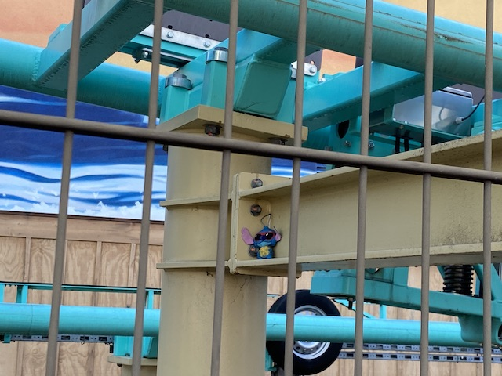

| |
Knotts Boysenberry Festival Preview
 All right. So we're back for the Knotts Boysenberry Festival. Now this is an event that I have been going to since it first opened. And this event has been topping itself every year since its creation, with the 2019 Boysenberry Festival being the best one of all. Then it got cancelled in 2020 for obvious reasons, and then they did the Taste of Boysenberry Festival last year which....was sort of like the Boysenberry Festival, except as a food festival and not as a theme park. Well, IT'S BACK!!!! Will the trend continue of it topping itself yet again (Nice view of Xcelerator from a local park BTW)?
All right. So we're back for the Knotts Boysenberry Festival. Now this is an event that I have been going to since it first opened. And this event has been topping itself every year since its creation, with the 2019 Boysenberry Festival being the best one of all. Then it got cancelled in 2020 for obvious reasons, and then they did the Taste of Boysenberry Festival last year which....was sort of like the Boysenberry Festival, except as a food festival and not as a theme park. Well, IT'S BACK!!!! Will the trend continue of it topping itself yet again (Nice view of Xcelerator from a local park BTW)?
*Sigh* I'm sad to report that this did NOT top the last Boysenberry Festival. In all honesty, this was my least favorite year for the Boysenberry Festival. Why? Well, let's keep going through the update to find out.
All right. Let's hurry and get on Ghostrider while they can.
Honestly, this is one of the best wooden coasters in California, only 2nd behind Gold Striker.
 And......BAM!!! Got off Ghostrider. The park opened 5 minutes ago, and....the line is already over 2 hours long. Yeah. There's a reason I got in line ASAP. To avoid THAT!!!
And......BAM!!! Got off Ghostrider. The park opened 5 minutes ago, and....the line is already over 2 hours long. Yeah. There's a reason I got in line ASAP. To avoid THAT!!!
Ghostrider is already mobbed. But....at least the back of the park is still empty. So....let's hop on HangTime before it gets mobbed.
 Still has some whip and is just a great ride.
Still has some whip and is just a great ride.

Captain Gantu has finally caught Stitch and is imprisoning him at Knotts Berry Farm. He must be imprisoning all of the Disneyland Regulars here too considering how they seem to have TOTALLY invaded the park.
It may be just a Turbo Drop, but it's still fun to ride from time to time.
Hey everyone! Did you enjoy your ride on Xcelerator? I hope so because you won't be riding this ride again anytime soon!
Yeah. I believe I got an Amber Alert for this guy. =P
Hmm. 3 out of 5. Not the best, but not the worst either. Eh, I could've done worse.
All right! Where are the pies!?
Ooh! It's the best time of the year for Knotts Berry Farm! =)
So many good things to try.
We got our tasting card and are ready to start eating.
First up, Boysenberry BBQ Chicken Pizza. This is a redo from the first time they did it in 2017. It was really good and I greatly prefered it to the original version. But this version tasted....a bit more normal and traditional whereas the old version was...a bit more unique and special. So I could easily see others coming to the opposite conclusion.
New for 2022. Stuffed Boysenberry Pie. Tastes like crap, but sure is cuddly.
Hey look! Sad-Eye-Joe got out of prison! I guess he's Glad-Eye-Joe now! =)
We also tried the Boysenberry Cowboy Chilli. This was basically just Chilli Mac, which…..I REALLY like. Still prefer the Boysenberry Jalapeño Mac & Cheese, but this is a close second, being both a solid Mac & Cheese and Chili.
This is why you don't have your Boysenberry Beer right before driving the Stagecoach. Tsk tsk tsk.
Sorry Coaster Nerd Kevin. But I am NOT waiting 2 hours for Silver Bullet today.
Ooh. I wonder what sort of crazy Boysenberry concotions are being served in that line?
Guys, I don't think that's Boysenberry Water splashing into our boats.
There must be something in the water. It's having some sort of weird effect on the local wildlife.
Knotts truly only hires the finest artists to work on their fences. =P
All right. Visit #2. This was just a lunch break since I work remote in the area, and.....Boysenberry Festival for lunch sounds good to me. Also, Xcelerator, despite just being closed for a while to be painted, is now closed again, and is STILL closed, despite this update being SUPER LATE!!!
 Hey! You guys regret waiting over 90 minutes for f*cking Jaguar!? Feel stupid yet!?
Hey! You guys regret waiting over 90 minutes for f*cking Jaguar!? Feel stupid yet!?
And Montezoomas Revenge is officially closed for its big makeover.
Hello? Anyone working on this over here?
Nope. They just parked the train out here and just appear to be leaving it be until after the Boysenberry Festival.
But that's enough ride talk. We're here for lunch. So let's start eating. And....this is an interesting item. The Boysenberry Chicken & Doughnut Sandwich.
OK. This was a let-down. The chicken was a decent, but the doughnut was just really stale. These two just don't mix very well. It literally is less than the sum of its parts. I think I remember being similarly dissapointed in the dougnut buerger. Thumbs down. =(
And for dessert, we have the Boysenberry Chocolate Mousse. DAMN!!! This was good! REALLY good! Very chocolatey, and it just was a big smashing hit. Favorite item at this year's Boysenberry Festival.
Visit #3. Hey Brandon! HangTime is open! You can finally get that credit and experience the ride for yourself!
Remember dude. My shins are getting assaulted for your credit.
What do you mean we're not doing the Calico Candy Mountain anymore!?
Hey everyone! Check out my cute fluffy tail!
The construction of this random resteraunt continues on.
One of the best new additions in 2022.
OK. For another dessert item, we got this Boysenberry Cobbler. It was good. But....this was basically just their classic Boysenberry Pie reshaped. Good, but nothing special.
Coming to Boysenberry Festival 2023. Boysenberry Koi Fish.
The joke lives on. Pony Express is STILL the BEST RIDE EVER!!!
THIS IS THE PARK WAIT TO GET IN AFTER LUNCH!!!? I'm sorry, but Knotts crowds have been INSANE!!! SERIOUSLY!!! Ever since the park reopened, Knotts has been UNGODLY busy! I know during the pandemic, I was concerned about them and was hoping for good crowds so the park would bounce back. Mission accomplished. Almost too much. Times that should be quiet days are MOBBED!!! THERE IS NOT A SINGLE EMPTY DAY IN THE PARK!!! IT'S LEGITIMATELY A PROBLEM!!! OK. Maybe not for parks who just think "MONEY!!!", but the park just can't be enjoyed when its THIS MOBBED.
I know it runs a weaker program than your average Top Scan, but Sol Spin is still a really fun ride and worth your time at Knotts.
Good grief dude. The crowds here are just too much man.
No. We didn't prioritize Dragon Swing this visit. This is just the most exciting ride in the park with a line that is short enough that we're willing to wait for it (excluding Sol Spin since we just got off it).
 I regret to inform you that the Ghostrider Single Riders Line doesn't work. But that doesn't even matter since....
I regret to inform you that the Ghostrider Single Riders Line doesn't work. But that doesn't even matter since....
However, everything came to a SCREECHING HALT while investigating Ghostrider's Single Riders Line. During that time, Jason was dragged away from his job on false pretenses, locked in a room and threatened to be fired if he left, harassed and berrated by an ASSHOLE SECURITY GUARD (Every mean thing I said about pervious asshole ride operators is NOTHING compared to THIS motherf*cker) who coerced him. I get incoherent texts from Jason saying something about feeling sad and selling tickets. What? I tried calling him MULTIPLE times to no avail, since he was being kept from his phone. They then coerced him into signing a phony bullsh*t "confession" due to "SIGN OR YOU'RE FIRED!!!". They then suspended him, and later promptly fired him for said "confession" that they coerced him into signing. FUCK YOU GUYS!!! FUCK THAT SECURITY GUARD!!! FUCK JASON'S BOSS (Who I think is luckily already fired for unrelated reasons)!!! AND FUCK EVERYONE INVOLVED IN THIS!!! I KNOW THAT I NORMALLY TRY AND KEEP THE SITE POSITIVE, BUT GOD DAMN IT!!! A SINGLE ANGRY RANT ABOUT THE HORRENDOUS TREATMENT OF WORKERS IS NOT ENOUGH!!!! So....we have other things going on related to this that I really don't want to discuss on the site. But this is just gross, disgusting, and unacceptable. The Security Guard needs to be fired ASAP!!! But Seriously Knotts. Fix this shit NOW!!! Also, Jason's former co-workers, take a hint from what's been going on at Amazon and Starbucks and follow suit. Hint hint.
And yeah. Go away. So this is easily the worst Boysenberry Festival. This made me do the unthinkable. Have leftover tasting card items that I wound up never using thanks to the whole drama about the park regarding Jason. A few more lunch visits to finish those up were cancelled due to that whole fiasco. And the whole thing left me with such a sour taste in my mouth that when my 2020 Pass Extension expired in May, I wound up not renewing at all and just haven't been back to the park. Now granted, there are a lot of reasons for this. Partially financial since.....finances are tough right now with us in financial lockdown (Fingers crossed for promotion or at least side-hustling enough to get me to Florida in 2023), and....renewing my Cedar Fair pass is a big expense. Especially if I renew the Platinum version. Also, the crowds of last year and this spring were SO F*CKING BAD that I partially thought "NO F*CKING WAY I WANT TO BE IN THOSE SUMMER CROWDS!!!". Those crowds LEGITIMATELY make the park less fun, even if you're not riding much. However, I did hear from friends that much of those crowds were people leeching off their pass extensions and went away in the summer. So that's good. But of course, the biggest reason was the disgraceful treatment of Jason. I have people telling me to boycott Cedar Fair forever because of this. Uh....No. Absolutely not. Most companies are evil, and do horrendous things. I'm not going to boycott them forever over this. ESPECIALLY as someone who runs a coaster website and writes theme park reviews. However, I DO NOT WANT THIS TO TURN INTO CRINGY DRAMA LIKE DURING THE EARLY YEARS (Only over actaul labor violations instead of just being an asshole) Knotts. PLEASE FIX THIS!!! Jon Storbeck, just please take out the garbage in your security department (you already apparently did so in the dining department). This should NOT be a hard problem to solve. Jason is very eager to bury the hatchet regarding this. And I WILL be back. Probably gonna downgrade my Cedar Fair pass since.....the only Cedar Fair parks I plan on being at in 2023 are KBF and CGA. Not hitting any Cedar Fair parks outside California. So....I'd rather just get a cheap Knotts pass, take the bus from my new place (which is really close), and just buy a CGA ticket for the summer. But regardless, my next visit will most likely be the 2023 Boysenberry Festival. And hopefully, this one is a lot better. Not only with no labor drama (which is inevitable since....I'm no longer associated with any employees of the park). But also, hopefully the crowds won't be insane next (this) year, and hopefully, the items served will be better (Aside from the Boysenberry Chicken & Doughnut Sandwich, everything was good. But nothing wowed me this year). Fingers crossed for a much better Knotts Boysenberry Festival visit and better Knotts visits in 2023. I genuinely want that.
Home
|